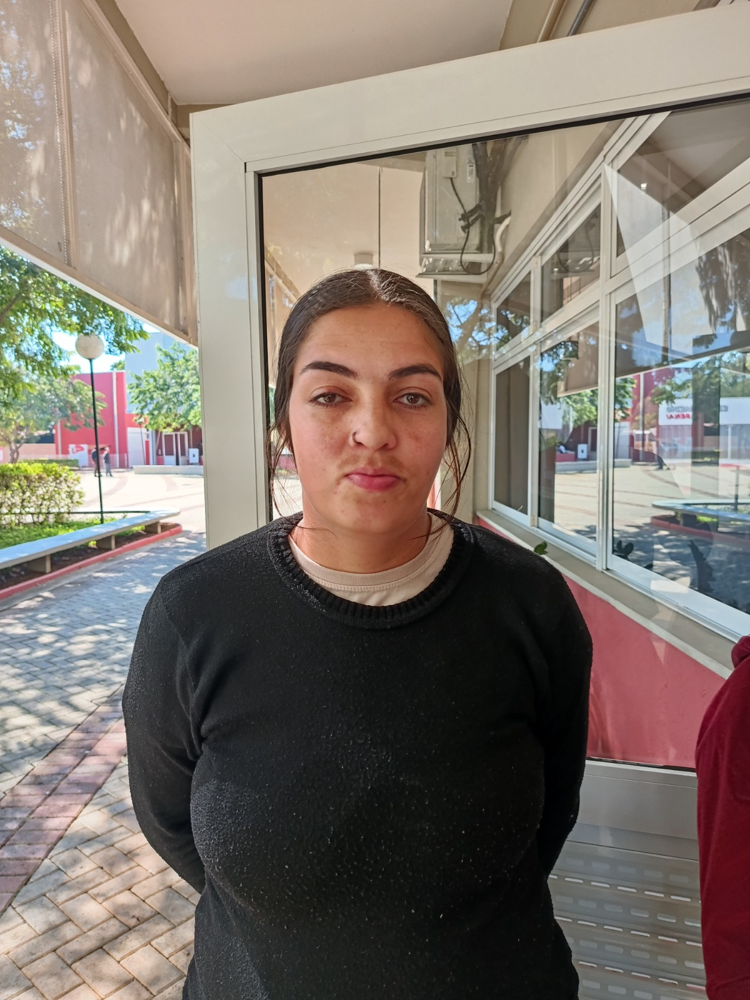
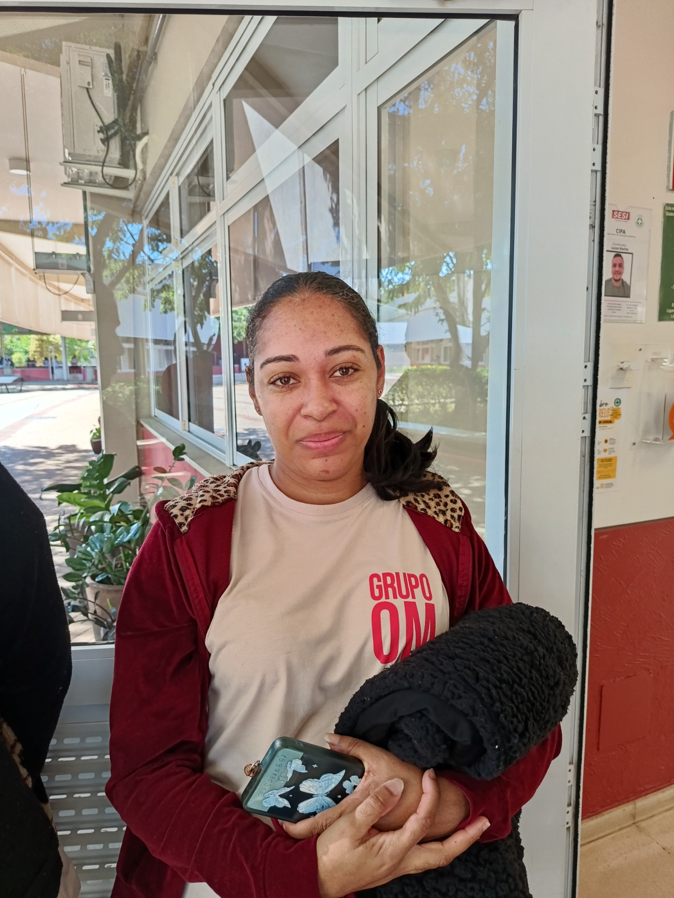

"Nosso trabalho garante a higienização dos ambientes para manter a escola agradável e bem cuidada."
Clique para ler a entrevista completa
Mudei de cidade e vim trabalhar aqui no SESI há sete meses. O maior desafio no começo foi recomeçar num lugar novo sem conhecer ninguém, mas agarrar essas novas oportunidades me trouxe muito aprendizado profissional.
O meu trabalho garante a higienização frequente dos banheiros para proporcionar um ambiente saudável para todos os alunos e funcionários. Para mim, trabalhar com educação significa fazer sempre o melhor serviço com dedicação e respeito às pessoas.
Minha mãe é minha grande fonte de inspiração. O conselho que deixo para a comunidade escolar e para os estudantes é: continuem estudando, corram atrás dos seus sonhos e não desistam diante das dificuldades!

"Cuidar da limpeza da escola e do refeitório é essencial para o bem-estar de todos."
Clique para ler a entrevista completa
Moro na cidade e atuo na equipe de limpeza do SESI há um ano. O que mais gosto no meu trabalho é cuidar da organização e da higienização do setor do refeitório, garantindo um espaço limpo para os alunos.
Enfrentar o desafio de se adaptar ao ambiente escolar e aproveitar as oportunidades de trabalho me fez crescer. Trabalhar em escola exige convivência, respeito e bom relacionamento com todos.
Minha mãe é a mulher que me inspira diariamente. Deixo para os estudantes a mensagem de que nunca desistam dos seus sonhos e fiquem firmes nos estudos!